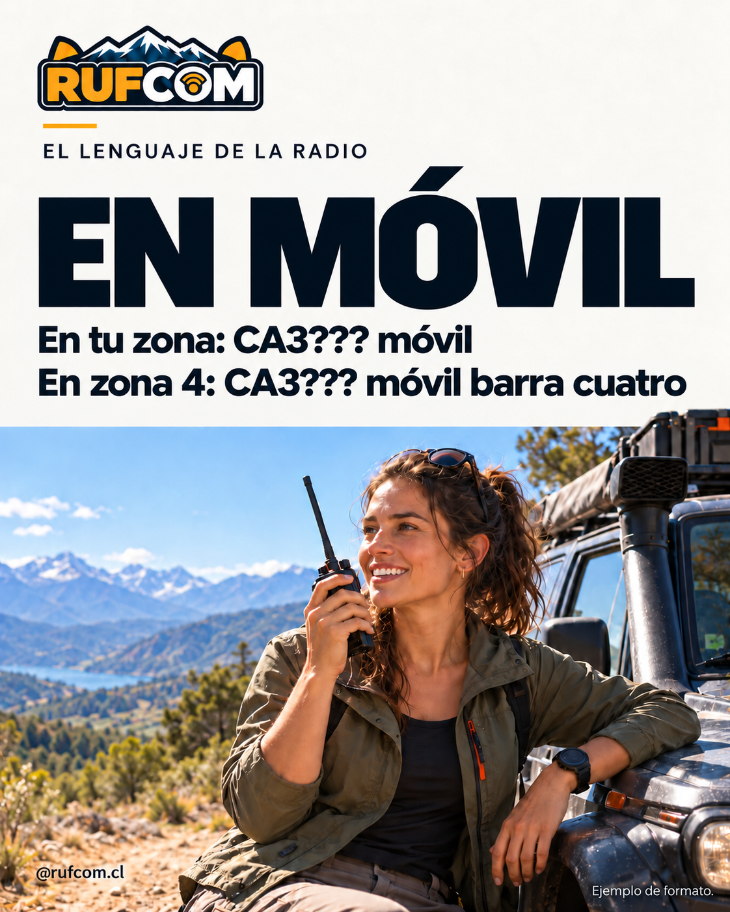
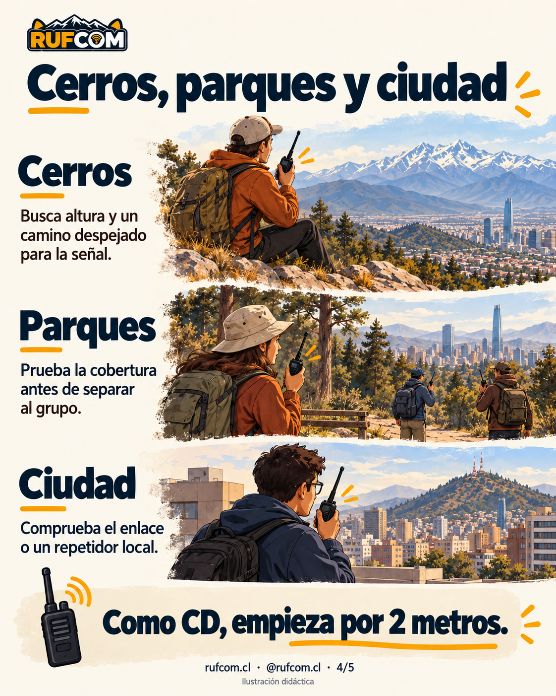
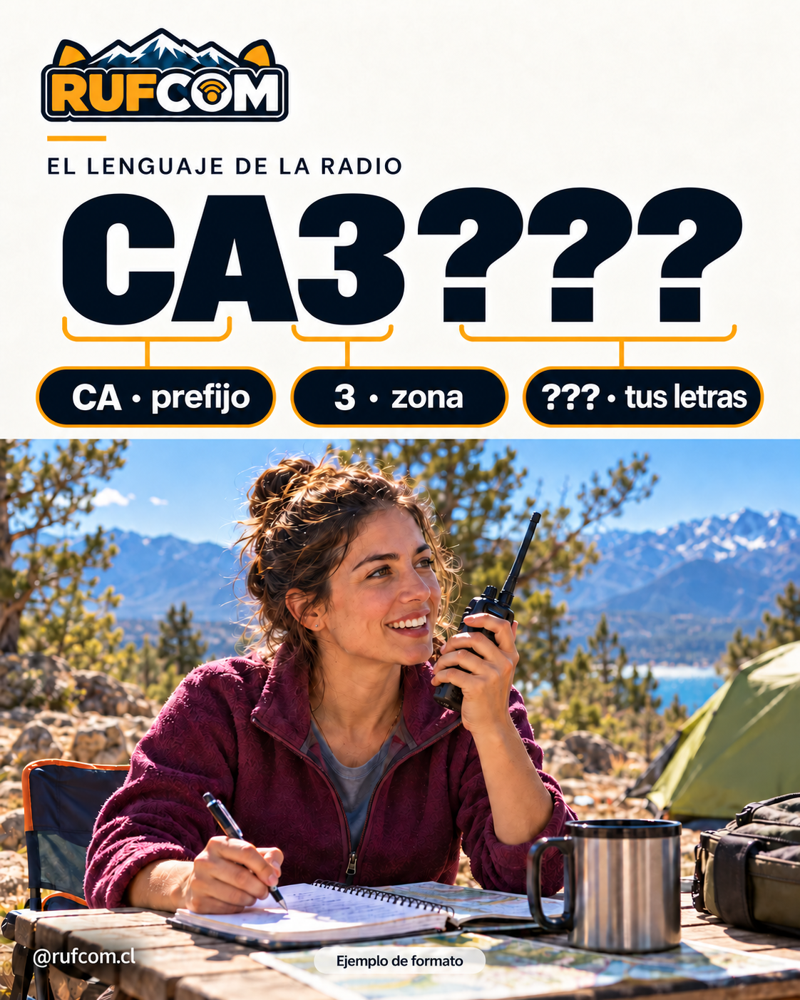
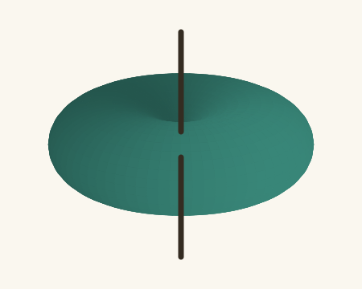
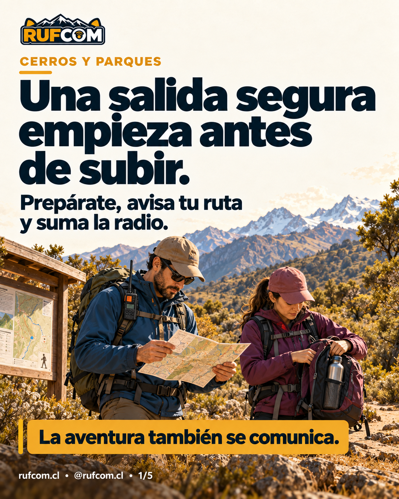

Cómo empezar en la radioafición en Chile
Tu guía principal: licencia, equipo inicial, repetidores y primer contacto.
Aprende · prepara · sal a explorar
¿Recién empiezas o estás preparando tu próxima salida? Encuentra aquí lo que necesitas aprender, ordenado por tema.

¿POR DÓNDE EMPEZAR?
Empieza en la radioafición en Chile → Ubica tus bandas → Aprende a comunicarte.
Empieza por lo esencial y aprende a ubicarte en la radio.

Tu guía principal: licencia, equipo inicial, repetidores y primer contacto.

Entiende los metros, los MHz y las bandas para Aspirante.

Aprende a identificarte en casa y durante una salida.
Prepárate para escuchar, entender y mantener el contacto.
Conoce tu equipo, prográmalo y prueba lo que aprendes.

Cuatro radios, sus usos y cómo se programan.

Opciones y montajes para casa y para el vehículo.

Reconoce las piezas y los cables de tu radio.

Prepara y revisa las memorias de tu radio paso a paso.

Un punto de partida para entender la radio digital.

Aprende qué dicen estas medidas sobre una antena.

Vivo, malla y acabado: revisa tu conexión antes de usarla.

Un proyecto de antena para aprender haciendo.
Encuentra un registro o aprende a comprobar tu instalación.
Prepara la aventura y suma la radio a tu equipo.
Baofeng UV-17 Pro GPS y AnyTone 878: nuestra experiencia de comunicación en Santiago.

Planifica, avisa tu ruta y prepara cómo mantener el contacto.
Lleva la estación fuera del escritorio con criterio.
Construcciones propias y lo que aprendimos al usarlas.
Prueba con un tema más general, como «antena», «radio» o «licencia».
PARA USAR, GUARDAR Y SEGUIR APRENDIENDO
Elige lo que quieres anotar. Cada archivo explica por dónde empezar y muestra un ejemplo separado de tus datos.
Después de tu primer contacto
Tu cuaderno de conversaciones por radio. Escribe una fila por contacto: fecha, hora, indicativo, frecuencia, modo y una nota opcional. Usa la fecha y hora de tu reloj local.
Ahora con nombre automático. Escribe el indicativo y el Excel completará el nombre si aparece en el listado chileno de SUBTEL incluido. Funciona sin internet. Si no lo encuentra, puedes escribir el nombre manualmente.
Descargar libro de guardia (Excel)Un contacto también se llama QSO. El indicativo son las letras y números con que se identifica la otra estación.
Ejemplo inventado de formato: 07/10/2026 · 18:30 · EJEMPLO · 145,500 MHz · FM · «Señal clara; hablamos de antenas». No representa un contacto real ni recomienda una frecuencia.
Incluye 500 filas. Los ejemplos están aparte y tus contactos empiezan vacíos.
Cuando ya tienes un medidor
Recuerda cómo estaba instalada tu antena y qué mostró el instrumento. Anota frecuencia, ROE, cable y qué cambiaste entre lecturas.
Descargar ficha de antena (Excel)ROE es el valor que tu medidor puede mostrar como SWR o VSWR. Copia la lectura; no necesitas calcularla.
Ejemplo inventado de formato: 145,500 MHz · ROE 1,40 · cable de 4 m · «Moví la antena al soporte». No es una medición de RUFCOM ni una frecuencia recomendada.
Incluye 50 lecturas. Para aprender a medir, sigue la guía de medición de RUFCOM.
Funcionan sin conexión. En el teléfono puede ser más cómodo leer la ayuda y completar la tabla después en un computador.